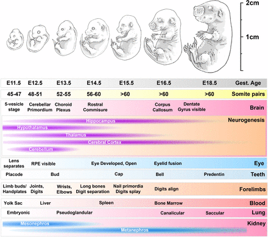

The ETiX-Embryo Experiment
How StembryoNet was tested for biotechnological use, and the experiment that proved its competence.

To create and test the capabilities of StembryoNet, a large-scale experiment that focused on classifying the developmental success of ETiX- embryos. ETiX embryos are derived from stem-cells and resemble models of early-stage mouse embryogenesis. These ETiX-embryos are formed from three different stem-cell types called ESC’s (Embryonic Stem-Cells), TSC’s (Trophoblast Stem-Cells) and ESC-iGata4 Cells. While these ETiX-embryos were created as models for biology research, they all vary widely in morphology and developmental success. Approximately 23% of all ETiX-embryos developed normally, which limited their use for experiments.
Since developmental success rates were so low, a dataset of 900 ETiX-embryos were generated and recorded using live fluorescent microscopy during the first 90 hours of development. Fluorescent labels allowed researchers to track the three stem-cell types in the ETiX-embryos over time. Expert embryologists then reviewed the images that were taken throughout the first 90 hours of development. The ETiX-embryos were then deemed as normal or abnormal depending on certain morphological features such cavity formation and tissue organization.
All of this collected data was used to train StembryoNet. Most of the training concentrated on the final 25 hours of development, when it’s obvious whether an embryo is developing properly or not. To further train StembryoNet, researchers used synchronized data which is an alignment of embryos at equivalent developmental stages. StembryoNet was then given a database of unsynchronized data in order to see how effectively it could label more realistic embryo models. StembryoNet proved itself to be 88% accurate at predicting developmental success in ETiX-embryos. StembryoNet could match the accuracy of embryologists as well as perform 18 times faster than them.
StembryoNet was also tested on it’s early stage prediction capabilities and achieved a high 65% accuracy rate in predicting the outcomes of embryos at cell-seedling stages (0 hours). Researchers were also able to show that ETiX-embryos had increased developmental success rates when containing higher initial stem-cell counts. The percentage rates from viable embryos rose from 23% to 32%, which proved that cell quantity is crucial in developmental success.
Throughout the experiment StembryoNet was also able to categorize ETiX-embryo development in four different pathways. Continuously normal, abnormal to normal, continuously abnormal, and normal to abnormal. This visualized to researchers that ETiX-embryo outcomes were not easy to predict in early developmental stages.
The experiment was a success and it’s apparent that StembryoNet will only be improving from here. AI technology isn’t exactly new, but this usage of image analysis in developmental research is certainly exciting.